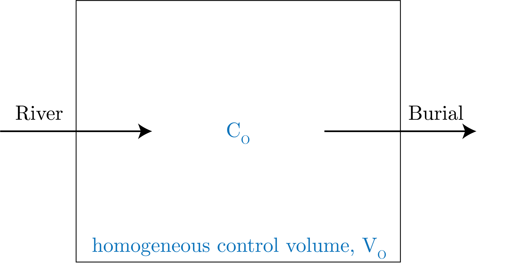

Composition of seawater, mass balance, and box models
Major ocean inputs and outputs
There are a few hypotheses as to why we have there is salt in the ocean.
The first of these is the accumulation hypothesis, which says there are rocks on land that are salts (i.e., have a cation and anion), there is weathering, which brings salts into the oceans, and then there is a hydrological cycle in which there is evaporation and precipitation.
However, we note that in this model there is only an input, no output.
This then means that we would constantly accumulate the salts, which isn't realistic.
Let's look at the inputs and the outputs:
Inputs
Land weathering
Gas exchange
Vents
Outputs
Burial
Biological processes (processes that take place away from the sediment in the water column
Authigensis (the process whereby a mineral or sedimentary rock deposit is generate where it is found or observed)
Gas exchange
Vents
Evaporation
Now, to first order, we can forget all of these except for weathering and burial, as our important inputs and outputs.
1 Box model
The diagram of this model is given in Fig. 1.

Fig. 1: A diagram of our 1-box model.
We start with, to get a rate of change of $\text{mol s}^{-1}$, we start with:
\begin{equation}
V_O \frac{\textrm{d}C_O}{\textrm{d}t} = \text{sources} - \text{sinks}.
\end{equation}
Then, from above we know that we can ascribe the following first-order reaction to these inputs and outputs:
\begin{align}
\text{sources }&= \text{rivers} = C_RQ_R, \\
\text{sinks }&= \text{burial} = V_OkC_O.
\end{align}
Therefore, we get, for a steady-state assumption:
\begin{equation}
C_RQ_R = V_OkC_O.
\end{equation}
We can then solve for the concentration to get:
\begin{equation}
C_O = \frac{C_RQ_R}{V_Ok},
\end{equation}
or the residence time:
\begin{equation}
\tau_R = \frac{1}{k} = \frac{C_OV_O}{C_RQ_R}.
\end{equation}
If we do not assume steady-state, we consider the following first-order reaction solution.
We say that the solution to an equation of the form:
\begin{equation}
\frac{\textrm{d}C}{\textrm{d}t} = -kC,
\end{equation}
is given by:
\begin{equation}
C(t) = C_0\exp\left[-kt\right].
\end{equation}
This is exponential decay with time.
We proceed with separation of variables:
\begin{equation}
\int \frac{\text{d}C'}{C} = -k\int \text{d}t,
\end{equation}
which gives:
\begin{equation}
\log\left[C\right] = -kt + \text{const},
\end{equation}
implying the solution, for the boundary condition $C(0) = C_0 \Rightarrow \exp\left[\text{const}\right] = C_0$:
\begin{equation}
C(t) = C_0\exp\left[-kt\right].
\end{equation}
We can see that this constant $k$, and more generally just the order and rate of reactions, for the elements within the ocean system are drastically, over 15 order of magnitude! That's alot.
As an example, we can get the residence of the chlorine ion:
\begin{equation}
\tau_R^{\text{Cl}^-} = \frac{559 \cdot 1.34 \times 10^{18}}{0.23 \cdot 3.73 \times 10^{15}} \simeq 90 \: \left[\text{My}\right].
\end{equation}
However, we note that the 1-Box model is less accurate for complicated dynamics.
As a general rule, the model is as good as the assumptions and set-up.
For instance, if we try to get the residence time of water in the ocean with the above model we would get:
\begin{equation}
\tau_{\text{H}_2\text{O}} = \frac{V_0}{Q_R} \simeq 40 \: \left[\text{Kyr}\right].
\end{equation}
However, this is not correct as there is only an input here, no outputs.
To add this in, we consider the output as evaporation and an input as precipitation.
Therefore, we get:
\begin{equation}
\frac{\textrm{d}V_O}{\textrm{d}t} = R + P - E \simeq 4 \: \left[\text{Kyr}\right].
\end{equation}
Composition of the ocean
The most important part of the ocean composition of anions and cations, as this contributes to the charge of the ocean.
The charge of the ocean is 0, that is it is net neutral.
Therefore, in our mass balances, we really care about the charge of the ocean.
We can look at profiles of these ions in Fig. 2
Fig. 2: Profiles of different forms of chemical constituents of the ocean.
2 Box Model
Now, we consider a two box model, in which there is a surface ocean box and a deep ocean box, shown in Fig. 3.
Fig. 3: The 2-box model we consider, which is known to represent the "biological pump".
The equations that we consider are for sinking, with is denoted by $\phi$, and transport $v$ as the major movements of the chemical constituents.
We write for the deep ocean:
\begin{equation}
V_d \frac{\textrm{d}C_d}{\textrm{d}t} = \phi + C_Sv - C_d v,
\end{equation}
which we can solve at steady state as:
\begin{equation}
\phi = v(C_d - C_s).
\end{equation}